컴퓨터응용선반기능사 (2012-02-12 기출문제)
1과목: 기계재료 및 요소
1. 공구강의 구비조건 중 틀린 것은?
- 강인성이 클 것
- 내마모성이 작을 것
- 고온에서 경도가 클 것
- 열처리가 쉬울 것
(정답률: 81%)

2. Al-Si계 합금인 실루민의 주조 조직에 나타내는 Si의 거친 결정을 미세화시키고 강도를 개선하기 위하여 개량처리를 하는데 사용되는 것은?
- Na
- Mg
- Al
- Mn
(정답률: 36%)
3. 스텔라이트계 주조경질합금에 대한 설명으로 틀린 것은?
- 주성분이 Co이다.
- 단조품이 많이 쓰인다.
- 800℃까지의 고온에서도 경도가 유지된다.
- 열처리가 불필요하다.
(정답률: 42%)
4. 다음 합성수지 중 일명 EP라고 하며, 현재 이용되고 있는 수지 중 가장 우수한 특성을 지닌 것으로 널리 이용되는 것은?
- 페놀 수지
- 폴리에스테르 수지
- 에폭시 수지
- 멜라민 수지
(정답률: 67%)
5. 금속을 상온에서 소성변형시켰을 때, 재질이 경화되고 연신율이 감소하는 현상은?
- 재경질
- 가공경화
- 고용강화
- 열변형
(정답률: 66%)
6. 황동의 자연균열 방지책이 아닌 것은?
- 수은
- 아연 도금
- 도료
- 저온풀림
(정답률: 52%)
7. 강을 충분히 가열한 후 물이나 기름 속에 급랭시켜 조직변태에 의한 재질의 경화를 주목적으로 하는 것은?
- 담금질
- 뜨임
- 풀림
- 불림
(정답률: 83%)
8. 다음 중 핀(Pin)의 용도가 아닌 것은?
- 핸들의 축과 고정
- 너트의 풀림 방지
- 볼트의 마모 방지
- 분해 조립할 때 조립할 부품의 위치결정
(정답률: 65%)
9. 기계요소 부품 중에서 직접 전동용 기계요소에 속하는 것은?
- 벨트
- 기어
- 로프
- 체인
(정답률: 65%)
10. 지름이 6cm인 원형단면의 봉에 500kN의 인장하중이 작용할 때 이 봉에 발생되는 응력은 약 몇 N/mm2인가?
- 170.8
- 176.8
- 180.8
- 200.8
(정답률: 51%)
11. 회전하고 있는 원동 마찰자의 지름이 250mm이고 종동차의 지름이 400mm일 때 최대 토크는 몇 Nㆍm인가?(단, 마찰자의 마찰계수는 0.2이고 서로 밀어 붙이는 힘이 2kN이다.)
- 20
- 40
- 80
- 160
(정답률: 44%)
12. 수나사의 호칭치수는 무엇을 표시하는가?
- 골지름
- 바깥지름
- 평균지름
- 유효지름
(정답률: 71%)
13. 다음 스프링 중 너비가 좁고 얇은 긴 보의 형태로 하중을 지지하는 것은?
- 원판 스프링
- 겹판 스프링
- 인장 코일 스프링
- 압축 코일 스프링
(정답률: 50%)
14. 다음 나사 중 백래시를 작게 할 수 있고 높은 정밀도를 오래 유지할 수 있으며 효율이 가장 좋은 것은?
- 사각 나사
- 톱니 나사
- 볼 나사
- 둥근 나사
(정답률: 61%)
15. 평벨트 풀리의 구조에서 벨트와 직접 접촉하여 동력을 전달하는 부분은?
- 림
- 암
- 보스
- 리브
(정답률: 38%)
2과목: 기계제도(절삭부분)
16. 그림과 같이 코일 스프링의 간략도를 그릴 때 A 부분에 나타내야 할 선으로 옳은 것은?
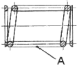
- 굵은 실선
- 가는 실선
- 굵은 파선
- 가는 2점 쇄선
(정답률: 38%)
17. 도면에 사용되는 가공 방법의 약호로 틀린 것은?
- 선반 가공 : L
- 드릴 가공 : D
- 연삭 가공 : G
- 리머 가공 : R
(정답률: 50%)
18. 그림과 같은 단면도의 명칭이 올바른 것은?
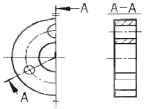
- 온 단면도
- 회전 도시 단면도
- 한쪽 단면도
- 조합에 의한 단면도
(정답률: 35%)
19. 기계제도에서 가는 1점 쇄선이 사용되지 않는 것은?
- 중심선
- 피치선
- 기준선
- 숨은선
(정답률: 55%)
20. 다음 도면에서 (A)의 치수는 얼마인가?
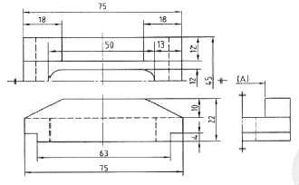
- 10.5
- 12
- 21
- 22
(정답률: 38%)
21. 그림과 같은 입체도에서 화살표 방향에서 본 것을 정면도로 할 때 가장 적합한 정면도는?
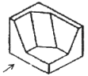
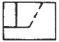
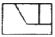
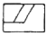
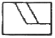
(정답률: 86%)
22. 축의 도시 방법에 관한 설명으로 옳은 것은?
- 축은 길이방향으로 온단면 도시한다.
- 길이가 긴 축은 중간을 파단하여 짧게 그릴 수 있다.
- 축의 끝에는 모떼기를 하지 않는다.
- 축의 키 홈을 나타낼 경우 국부 투상도로 나타내어서는 안된다.
(정답률: 66%)
23. 치수보조(표시) 기호와 그 의미 연결이 틀린 것은?
- R : 반지름
- SR : 구의 반지름
- t : 판의 두께
- ( ) : 이론적으로 정확한 치수
(정답률: 75%)
24. 다음 기하 공차에 기입 틀에서 좌측 맨 앞의 기호가 의미하는 것은?
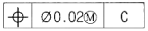
- 진원도
- 동축도
- 진직도
- 위치도
(정답률: 73%)
25. 치수 ø40H7에 대한 설명으로 틀린 내용은?
- 기준 치수는 40mm
- 7은 IT공차의 등급
- 아래 치수 허용차는 +0.25mm
- 대문자 H는 구멍기준을 의미
(정답률: 70%)
26. 다음 리머 중 자루와 날 부위가 별개로 되어 있는 리머는?
- 솔리드 리머(solid reamer)
- 조정 리머(adjustable reamer)
- 팽창 리머(expansion reamer)
- 셀 리머(shell reamer)
(정답률: 46%)
27. 선반에서 면판이 설치되는 곳은?
- 주축 선단
- 왕복대
- 새들
- 심압대
(정답률: 43%)
28. 외경 연삭기의 이송방법에 해당하지 않는 것은?
- 연삭 숫돌대 방식
- 테이블 왕복식
- 플랜지 컷 방식
- 새들 방식
(정답률: 36%)
29. 다음 중 밀링 머신을 이용하여 가공하는데 적합하지 않는 것은?
- 평면 가공
- 홈 가공
- 더브테일 가공
- 나사 가공
(정답률: 60%)
30. 수용성 절삭유에 대한 설명 중 틀린 것은?
- 원액과 물을 혼합하여 사용한다.
- 표면활성화제와 부식방지제를 첨가하여 사용한다.
- 점성이 높고 비열이 작아 냉각효과가 작다.
- 고속절삭 및 연삭 가공액으로 많이 사용한다.
(정답률: 76%)
3과목: 기계공작법
31. 둥근봉 외경을 고속으로 가공할 수 있는 공작기계로 가장 적합한 것은?
- 수평밀링
- 직립드릴머신
- 선반
- 플레이너
(정답률: 68%)
32. 바이트로 재료를 절삭할 때 칩의 일부가 공구의날 끝에 달라붙어 절삭날과 같은 작용을 하는 구성 인선(built-up edge)의 방지법으로 틀린 것은?
- 재료의 절삭 깊이를 크게 한다.
- 절삭속도를 크게 한다.
- 공구의 윗면 경사각을 크게 한다.
- 가공 중에 절삭유제를 사용한다.
(정답률: 69%)
33. 원통연삭기에서 숫돌 크기의 표시 방법의 순서로 올바른 것은?
- 바깥지름×안지름
- 바깥지름×두께×안지름
- 바깥지름×둘레길이×안지름
- 바깥반지름×두께×안반지름
(정답률: 67%)
34. 나사의 피치 측정에 사용되는 측정기기는?
- 오토콜리메이터
- 옵티컬 플랫
- 사인바
- 공구 현미경
(정답률: 53%)
35. 이미 뚫어져 있는 구멍을 좀 더 크게 확대하거나, 정밀도가 높은 제품으로 가공하는 기계는?
- 보링 머신
- 플레이너
- 브로칭 머신
- 호빙 머신
(정답률: 74%)
36. 마이크로미터 측정면의 평면도를 검사하는데 사용하는 것은?
- 옵티 미터
- 오토 콜리메이터
- 옵티컬 플랫
- 사인바
(정답률: 65%)
37. 물이나 경유 등에 연삭 입자를 혼합한 가공액을 공구의 진동면과 일감 사이에 주입시켜 가며 초음파에 의한 상하진동으로 표면을 다듬는 가공 방법은?
- 방전 가공
- 초음파 가공
- 전자빔 가공
- 화학적 가공
(정답률: 79%)
38. 선반 가공에서 외경을 절삭할 경우, 절삭가공 길이 200mm를 1회 가공하려고 한다. 회전수 1000rpm, 이송 속도 0.15mm/rev이면 가공 시간은 약 몇 분인가?
- 0.5
- 0.91
- 1.33
- 1.48
(정답률: 56%)
39. 밀링의 절삭방법 중 상향절삭(up cutting)과 비교한 하향절삭(down cutting)에 대한 설명으로 틀린 것은?
- 절삭력이 하향으로 작용하며 가공물 고정이 유리하다.
- 공구의 마멸이 적고 수명이 길다.
- 백래시가 자동으로 제거되며 절삭력이 좋다.
- 저속 이송에서 회전저항이 작아 표면 거칠기가 좋다.
(정답률: 66%)
40. 공작물에 회전을 주고 바이트에는 절입량과 이송량을 주어 원통형의 공작물을 주로 가공하는 공작기계는?
- 셰이퍼
- 밀링
- 선반
- 플레이너
(정답률: 78%)
4과목: CNC공작법 및 안전관리
41. 다음 중 일반적으로 선반에서 가공하지 않는 것은?
- 키 홈 가공
- 보링 가공
- 나사 가공
- 총형 가공
(정답률: 47%)
42. 공작기계의 부품과 같이 직선 슬라이딩 장치의 제작에 사용되는 공구로 측면과 바닥면이 60°가 되도록 동시에 가공하는 절삭공구는?
- 엔드밀
- T홈 밀링 커터
- 더블테일 밀링 커터
- 정면 밀링 커더
(정답률: 49%)
43. 머시닝센터에서 주축의 회전수가 1500rpm이며 지름이 80mm인 초경합금의 밀링 커터로 가공할 때 절삭속도는?
- 38.2m/min
- 167.5m/min
- 376.8m/min
- 421.2m/min
(정답률: 58%)
44. CNC 작업 중 기계에 이상이 발생하였을 때 조치사항으로 적당하지 않은 것은?
- 알람 내용을 확인한다.
- 경보등이 점등되었는지 확인한다.
- 간단한 내용은 조작설명서에 따라 조치하고 안되면 전문가에게 의뢰한다.
- 기계가공이 안되기 때문에 무조건 전원을 끈다.
(정답률: 76%)
45. CNC 공작기계 좌표계의 이동위치를 지령하는 방식에 해당하지 않는 것은?
- 절대지령 방식
- 증분지령 방식
- 잔여지령 방식
- 혼합지령 방식
(정답률: 66%)
46. CNC공작기계의 안전에 관한 설명 중 틀린 것은?
- 그래픽 화면만 실행할 때에는 머신 록(machine lock)상태에서 실행한다.
- CNC선반에서 자동원점 복귀는 G28 U0 W0로 지령한다.
- 머시닝센터에서 자동원점 복귀는 G91 G28 Z0로 지령한다.
- 머시닝센터에서 G49 지령은 어느 위치에서나 실행한다.
(정답률: 51%)
47. 다음 중 CNC 프로그램 구성에서 단어(word)에 해당하는 것은?
- S
- G01
- 42
- S500 M03;
(정답률: 55%)
48. 다음 중 머시닝센터 작업시 프로그램에서 경보(alarm)가 발생하는 블록은?
- G01 X10. Y15. F150 ;
- G00 X10. Y15. ;
- G02 I15. F150 ;
- G03 X10. Y15. S150. ;
(정답률: 43%)
49. CNC 선반에서 외경 절삭을 하는 단일형 고정 사이클은?
- G89
- G90
- G91
- G92
(정답률: 41%)
50. 머시닝센터 프로그램에서 공구길이 보정에 관한 설명으로 틀린 것은?
- Y축에 명령하여야 한다.
- 여러 개의 공구를 사용할 때 한다.
- G49는 공구길이 보정 취소 명령이다.
- G43은 (+)방향 공구길이 보정이다.
(정답률: 44%)
51. CAD/CAM 시스템의 주변기기 중 출력장치에 해당되는 것은?
- 조이스틱
- 프린터
- 트랙볼
- 하드디스크
(정답률: 77%)
52. CNC 공작기계에서 각 축을 제어하는 역할을 하는 부분은?
- ATC 장치
- 공압 장치
- 서보 기구
- 칩처리 장치
(정답률: 62%)
53. 1000rpm으로 회전하는 스핀들에서 3회전 휴지(dwell:일시정지)를 주려고 한다. 정지시간과 CNC 프로그램이 옳은 것은?
- 정지시간 : 0.18초, CNC프로그램 : G03 X0.18 ;
- 정지시간 : 0.18초, CNC프로그램 : G04 X0.18 ;
- 정지시간 : 0.12초, CNC프로그램 : G03 X0.12 ;
- 정지시간 : 0.12초, CNC프로그램 : G04 X0.12 ;
(정답률: 59%)
54. 연삭 작업할 때의 유의 사항으로 틀린 것은?
- 연삭숫돌을 사용하기 전에 반드시 결함 유무를 확인해야 한다.
- 테이퍼부는 수시로 고정 상태를 확인한다.
- 정밀연삭을 하기 위해서는 기계의 열팽창을 막기 위해 전원투입 후 곧바로 연삭한다.
- 작업을 할 때에는 분진이 심하므로 마스크와 보안경을 착용한다.
(정답률: 80%)
55. 그림과 같이 프로그램의 원점이 주어져 있을 경우 A점의 올바른 좌표는?
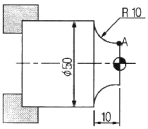
- X40. Z10.
- X10. Z50.
- X30. Z0.
- X50. Z-10.
(정답률: 53%)
56. CNC 선반에서 전원 투입 후 CNC 선반의 초기 상태의 기능으로 볼 수 없는 것은?
- 공구 인선반경 보정기능 취소(G40)
- 회전당 이송(G99)
- 회전수 일정제어 모드(G97)
- 절삭속도 일정제어 모드(G96)
(정답률: 24%)
57. 나사가공 프로그램에 관한 설명으로 적당하지 않는 것은?
- 주축의 회전은 G96으로 지령한다.
- 이송속도는 나사의 리드 값으로 지령한다.
- 나사의 절입 회수는 절입표를 참조하여 여러 번 나누어 가공한다.
- 복합 고정형 나사 절삭 사이클은 G76이다.
(정답률: 38%)
58. 머시닝센터에서 많이 사용하지만, CNC밀링에서는 기능이 수행되지 않는 M기능은?
- M03
- M04
- M⑤
- M06
(정답률: 58%)
59. CNC선반에서 일감과 공구의 상대 속도를 지정하는 기능은?
- 준비 기능(G)
- 주축 기능(S)
- 이송 기능(F)
- 보조 기능(M)
(정답률: 50%)
60. CNC선반에서 a에서 b까지 가공하기 위한 원호보간 프로그램으로 틀린 것은?
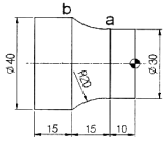
- G02 X40. Z-25. R20. ;
- G02 U10. W-15. R20. ;
- G02 U40. W-15. R20. ;
- G02 X40. W-15. R20. ;
(정답률: 43%)